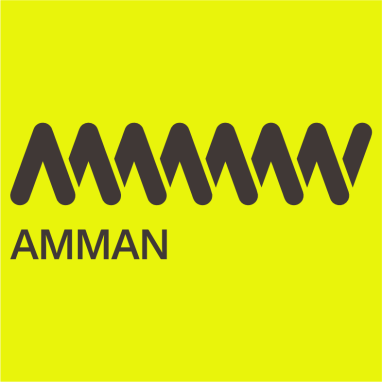
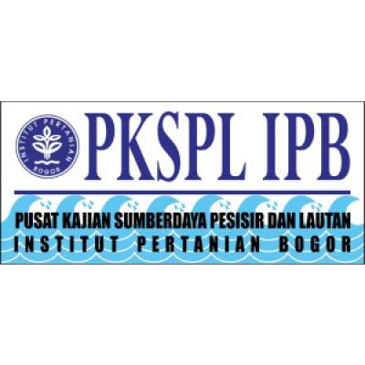

Pemantauan Habitat dan Populasi Ikan bertujuan untuk mendapatkan data dan informasi habitat secara berkala yang akan digunakan untuk pelaporan dan konservasi berkelanjutan. Sub-kegiatan dalam pemantauan ini meliputi pemantauan terumbu karang, mangrove, dan lamun; pemantauan kondisi ekosistem dan identifikasi lokasi rehabilitasi; pemetaan dan profiling spot atraksi wisata potensial berbasis ekosistem; pemetaan dan inventarisasi habitat; serta penilaian kerentanan habitat penyu di lokasi pendaratan atau peneluran.
Komposisi vegetasi di Gili Balu didominasi oleh jenis tumbuhan pantai yang terdiri dari vegetasi mangrove, vegetasi pantai dan sedikit vegetasi savana. Dari hasil pengambilan data vegetasi, dapat diketahui bahwa setidaknya terdapat sebanyak 75 jenis. Secara keseluruhan jumlah titik/jalur pengamatan vegetasi berjumlah 12 titik/jalur.
Berdasarkan lokasinya, komposisi vegetasi pantai tertinggi berada di lokasi Pulau Belang, yaitu sebanyak 47 jenis dan terendah berada di lokasi Pulau Kambing (sebanyak 18 jenis). Komposisi jenis vegetasi terbanyak terdapat pada kelompok habitus pohon, yaitu sebanyak 31 jenis (41,33%) dan terendah pada kelompok habitus epifit dan palem; masing-masing hanya terdiri dari 1 jenis (1,33%).
Dari semua jenis vegetasi yang telah teridentifikasi nama ilmiahnya, dapat diketahui bahwa vegetasi di lokasi Gili Balu tersusun atas taksa utama Spermatophyta (tumbuhan berbiji); yang terbagi ke dalam dua kelompok yaitu: Monokotil (berkeping tunggal) sebanyak 5 famili dan 6 spesies serta Dikotil (berkeping ganda) sebanyak 35 famili dan 69 spesies. Sehingga secara keseluruhan, jenis vegetasi pantai yang ada dapat dikelompokkan ke dalam 40 famili.
Di lokasi Gili Balu tidak dijumpai jenis vegetasi yang termasuk kategori dilindungi berdasarkan PP No. 7 tahun 1999 maupun Permen LHK No. P.106 tahun 2018. Berdasarkan status perdagangan internasional, terdapat 3 jenis vegetasi yang termasuk ke dalam Appendiks II CITES (data valid sejak Mei 2023), yaitu: Buah Naga (Hylocereus polyrhizus), Kaktus/Duri Tentong (Opuntia ficus-indica) dan Anggrek Vanda (Vanda limbata).
Dari grafik diatas dapat terlihat bahwa tutupan karang keras cukup berfariasi dari 5% hingga 76%. Rata-rata tutupan karang bernilai diatas 19%. Hal ini berarti bahwa tutupan karang hidup di Gili Balu umumnya masuk kategori sedang hingga baik. Tutupan karang keras hidup tertinggi terdapat di Selatan Pulau Paseran dengan nilai 76%. Terumbu karang dengan kategori tutupan yang baik lainnya terdapat di Pulau Belang bagian barat dan Selatan, Pulau Kambing, Pulau Kenawa bagian Timur, Pulau Namo bagian Selatan, Pulau Ular dan Pulau Mandiki.
Ekosistem terumbu karang di Gili Balu cukup unik, karena hampir di semua lokasi memiliki tutupan karang lunak yang tinggi. Hal ini dikarenakan kondisi perairan di Gili Balu yang memiliki arus yang kuat. Umumnya perairan dengan arus yang kuat disukai oleh karang lunak karena karang lunak lebih adaptif dengan kondisi tersebut. Hal ini menjadikan ekosistem terumbu karang Gili Balu terlihat indah dan penuh karena ruang-ruang kosong di isi oleh karang lunak. Bahkan bekas karang mati juga ditumbuhi oleh karang lunak.
Pengamatan keberadaan padang lamun dilakukan di delapan gili (pulau), yaitu Gili Belang, Gili Kambing, Gili Paserang, Gili Kenawa, Gili Kalong, Gili Namo, Gili Ular, dan Gili Mandiki. Hanya Gili Ular dan Gili Mandiki yang tidak ditemukan lamun.
Pengamatan keberadaan padang lamun dilakukan di delapan gili (pulau), yaitu Gili Belang, Gili Kambing, Gili Paserang, Gili Kenawa, Gili Kalong, Gili Namo, Gili Ular, dan Gili Mandiki. Hanya Gili Ular dan Gili Mandiki yang tidak ditemukan lamun.
Secara umum, nilai presentase tutupan lamun di kawasan Gili Balu berkisar anatara 26%-54%. Jenis lamun yang ditemukan di kawasan ini adalah Enhalus acoroides, Thalassia hemprichii, Cymodocea rotundata, Cymodocea serrulata, Syringodium isoetifolium, Halophila ovalis, Halodule uninervis, dan Halodule pinifolia. Ada spesies kembali dilaporkan ditemukan di lapang, salah satunya di perairan Gili Balu yaitu Halophila major.
Hasil Pengamatan Ekosistem Lamun di Kawasan Gili Balu
No. | Stasiun | Jenis lamun | Tutupan lamun (%) | Status ekosistem lamun (a) | Status ekosistem lamun (b) |
1 | Gili Belang | Ea, Th, Cr, Si, Hu | 50 ± 19,02% | Buruk (0,519) | Sedang |
2 | Gili Kambing | Ea, Th, Cr, Ho, Hu, Hp | 54 ± 17,65% | Sedang (0,594) | Padat |
3 | Gili Paserang I | Ea, Th, Cr, Os, Si, Ho, Hp, Hu | 44 ± 28,17% | Sedang (0,576) | Sedang |
4 | Gili Paserang II | Ea, Th, Cr, Hp, Hu | 31 ± 20,43% | Sedang (0,572) | Sedang |
5 | Gili Kenawa I | Th, Cr, Hu | 37 ± 23,41% | Buruk (0,486) | Sedang |
6 | Gili Kenawa II | Th, Cr, Hu | 53 ± 23,57% | Buruk (0,482) | Padat |
7 | Gili Kalong I | Ea, Th, Cr, Os, Si, Hu, Ho | 45 ± 17,46% | Buruk (0,524) | Sedang |
8 | Gili Kalong II | Th, Cr, Hj | 46 ± 21,75% | Sangat buruk (0,395) | Sedang |
9 | Gili Namo I | Ea, Th | 29 ± 17,65% | Sangat buruk (0,396) | Sedang |
10 | Gili Namo II | Ea, Th, Si | 36 ± 8,74% | Sangat buruk (0,393) | Sedang |
Keterangan: a) Indeks Kesehatan Lamun (Hernawan et al. 2020); b) Rahmawati et al. (2014); Ea (Enhalus acoroides), Th (Thalassia hemprichii); Cr (Cymodocea rotundata); Os (Oseana serrulata); Si (Syringodium iseotifolium); Ho (Halophila ovalis), Hp (Halodule pinifolia); Hu (Halodule uninervis); dan Hj (Halophila major).
Secara singkat, status IKEL (Indeks Kesehatan Ekosistem Lamun) di Glili Balu adalah sebagai berikut:
Potensi obyek wisata berdasarkan kondisi eksisting di Gili Balu
Dari hasil survey lapangan dan pengolahan data sekunder yang ada, pengembangan wisata di kawasan wisata Bahari Gili Balu dibagi menjadi 4 zona pengembangan utama, yakni zona wisata island living, zona wisata petualangan, zona wisata konservasi laut, dan zona wisata minat khusus. Keempat zona pengembangan wisata ini dibagi berdasarkan karakteristik lanskap, sumberdaya alam dan potensi objek wisata masing-masing area serta berdasarkan pembagian fungsi dan aktivitas ruang untuk perencanaan ke depannya.
Berdasarkan hasil analisis, Kawasan Gili Balu memiliki kesesuaian untuk ekowisata snorkeling dan menyelam, teridentifikasi luasannya mencapai 221,70 ha dengan total luas masing-masing aktivitas adalah 142,00 ha untuk aktivitas snorkeling, dan 79,69 ha untuk aktivitas menyelam. Luas total ini dijumlah dari area dengan kategori sesuai dan sangat sesuai. Untuk masing-masing pulau, luas kesesuaian memiliki perbedaan yang cukup signifikan dengan kecenderungan yang sama untuk masing-masing aktivitas. Kesesuaian paling luas adalah Pulau Belang dan yang paling kecil adalah Pulau Ular, hal ini sama untuk masing-masing kategori.
Hasil pengecekan lapangan, mengacu kepada informasi yang diperoleh dari hasil wawancara dengan nelayan dan masyarakat setempat, teridentifikasi beberapa spot tapak lokasi area pendaratan (landing) penyu untuk bertelur (nesting). Spot tapak lokasi tersebut teridentifikasi di lima pulau, yakni: 1 spot di Pulau Kenawa, 1 spot di Pulau Belang, 3 spot di Pulau Paserang, 1 spot di Pulau Kalong dan 1 spot di Pulau Namo/Nyamuk.
Berdasarkan informasi yang diperoleh dari nelayan dan masyarakat, mengacu kepada ciri dan karakteristiknya, spesies penyu yang mendarat di spot tapak lokasi area landing/nesting tersebut utamanya dari jenis penyu lekang (Lepidochelys olivacea), penyu lekang merupakan spesies penyu yang hidup di perairan tropis dan subtropis yang berperairan dangkal.
Hasil analisis sederhana terhadap keberadaan spot tapak lokasi area landing/nesting area dilihat dari pengaruh sumber ancaman/tekanan (pressures) yang selengkapnya tersaji pada matriks berikut ini.
Mengacu kepada matriks penilaian di atas, ke tiga sumber permasalahan (ancaman/tekanan) tersebut meng-exspose Spot Tapak Lokasi Area Landing/ Nesting dengan tingkat exposure yang tinggi dan bahkan sangat tinggi, dengan kemampuan adaptasi (Adaptive Capacity) secara alamiah yang buruk (poor), namun kemampuan adaptasi dari sisi management/pengelolaan saat ini berada pada posisi moderat.
Mengacu kepada hasil penilaian kerentanan tersebut di atas, upaya mitigasi dan atau perbaikan sumber permasalahan (ancaman/tenakan) terkait dengan “Kegiatan Wisata”, dapat dilakukan dengan melaksanakan kordinasi dan advokasi dengan parapihak terkait guna memastikan semua kegiatan wisata yang dilakukan tidak merusak dan atau mengganggu tapak lokasi area landing/nesting penyu.


PKSPL IPB
Pengelola Wisata Gili Balu Poto Tano
{kind=link}
{kind=link}
{kind=link}
{kind=link}
{kind=link}
{kind=link}
{kind=link}